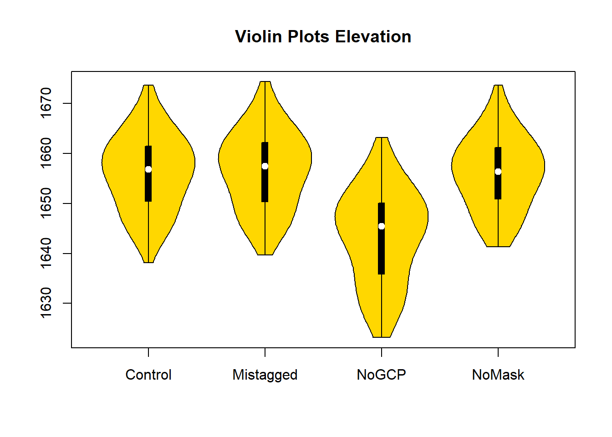
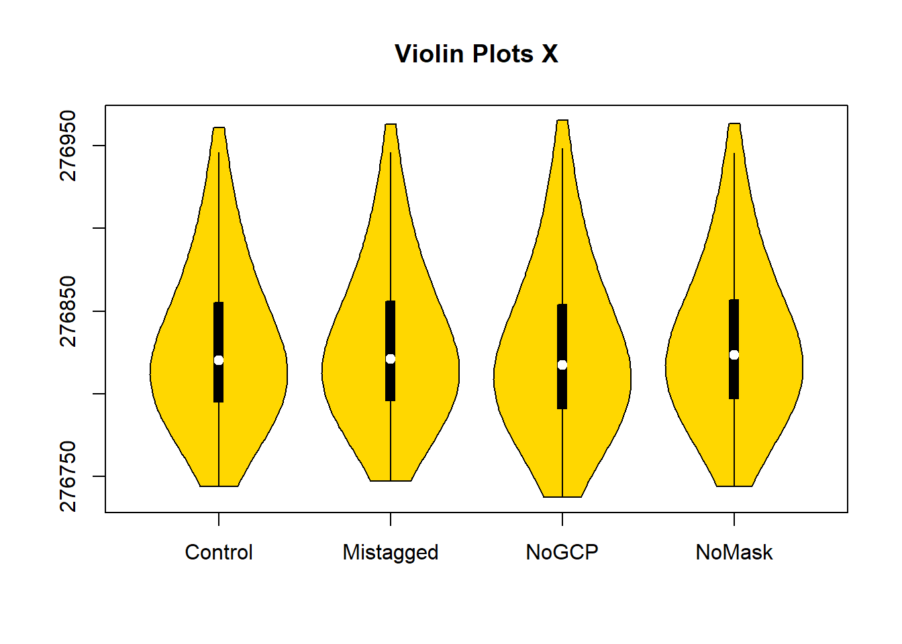
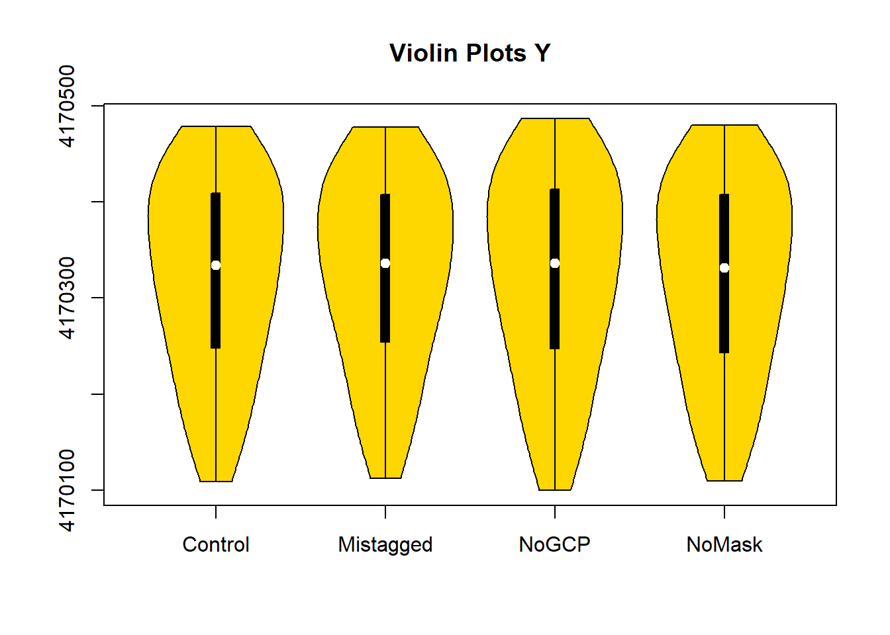

Chapter 4 Results
As seen in the methodology section, all four las point clouds are relatively accurate in that it accurately models the shoreline, and the details of the shoreline are accurately portrayed in relation to the other points. Violin plots are a type of plot that can show systematic changes in the collection of points in the point clouds. A violin plot is a type of box and whisker plot that displays the density of point along a given parameter (amount of points in the X-, Y- and Z- direction are used below). The code below defines the data and then creates violin plots comparing the test datasets with the control dataset. When the violin plot of a test dataset mirrors that of the control dataset the test dataset is not significantly different in that parameter. The three violin plots below represent the distribution of X-, Y- and Z- values in the different las datasets.As seen below, each of the violin plots is relatively accurate compared to the control dataset with very similar violin shapes. The No Ground Control elevation data is inaccurate and is uniformly moved downwards compared to the control dataset.This violin is more evenly spread than the other datasets. The X- and Y- violin plots of NoGCP are also longer than the other plots.
#Reading LAS Files
library(lidR)
Control <- readLAS("data/11-30-20-Correct.las")
Mistagged <- readLAS("data/11-30-20-Mistag.las")
NoGCP <- readLAS("data/11-30-20-NoGCP.las")
NoMask <- readLAS("data/11-30-20-NoMagicWand.las")# Defining Variables
ZControl <- Control@data[["Z"]]
XControl <- Control@data[["X"]]
YControl <- Control@data[["Y"]]
ZMistagged <- Mistagged@data[["Z"]]
XMistagged <- Mistagged@data[["X"]]
YMistagged <- Mistagged@data[["Y"]]
ZNoGCP <- NoGCP@data[["Z"]]
XNoGCP <- NoGCP@data[["X"]]
YNoGCP <- NoGCP@data[["Y"]]
ZNoMask <- NoMask@data[["Z"]]
XNoMask <- NoMask@data[["X"]]
YNoMask <- NoMask@data[["Y"]]The Violin plot below displays the distribution of point along the Z-axis, or elevation. The elevation accuracy is of the utmost importance in bathymetry mapping as bathymetry maps are often used to calculate storage capacity (volume) of a reservoir. The Violin plot below shows that having no GCPs during model creation affects both the shape of the violin plot as well as shifting the entire violin plot in the z-direction. This means that having no GCP in the model is unacceptable as it led to a ~10ft shift in the point cloud model.
# Elevation Violin Plot
library(vioplot)
vioplot(ZControl, ZMistagged, ZNoGCP, ZNoMask, names=c("Control", "Mistagged", "NoGCP", "NoMask"),
col="gold")
title("Violin Plots Elevation")
The two violin plots below shows the distribution of points in the point clouds on the X- and Y-axis. There is no considerable difference between the three models which shows that the three factors don’t cause major changes in the X- and Y- axis. Although there doesn’t seem to be any large systematic difference in the three models, a closer look at the 3D models found in methods shows that the NoMask model has a “shoreline” that extends further into the water than the other models. This extension in shoreline is because the software is trying to model the water as shoreline. In bathymetry mapping, the shoreline point cloud and sonar point cloud should have a smooth transition from one to the other. The water being modeled in the NoMask point cloud keeps the two models from having this smooth transition, therefore the masking tool should be used to mask water out of the images.
# X Violin Plot
library(vioplot)
vioplot(XControl, XMistagged, XNoGCP, XNoMask, names=c("Control", "Mistagged", "NoGCP", "NoMask"),
col="gold")
title("Violin Plots X")
# X Violin Plot
library(vioplot)
vioplot(YControl, YMistagged, YNoGCP, YNoMask, names=c("Control", "Mistagged", "NoGCP", "NoMask"),
col="gold")
title("Violin Plots Y")